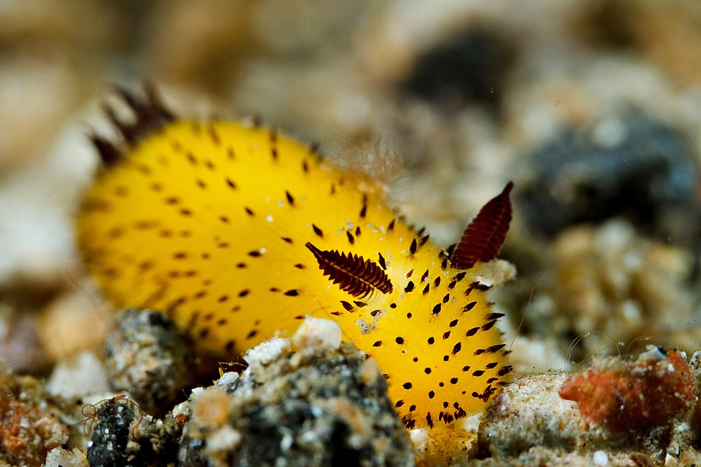
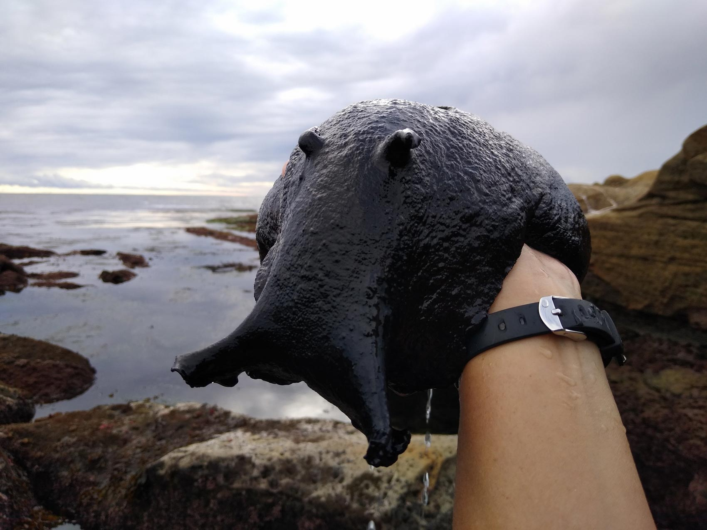

На самом деле «морской заяц» — это не какое-то единое животное, а народное название для целого рода брюхоногих моллюсков. Учёные называют его аплизия (лат. Aplysia).

Внешне аплизии похожи на крупных слизней. Свое «заячье» имя они получили из-за двух пар чувствительных щупалец на голове: задняя пара действительно напоминает ушки. С боков тело прикрыто массивными лопастями — моллюск может расправлять их и, волнообразно сокращая, довольно долго плыть. Окраска у разных видов очень разнообразная: встречаются тёмно-фиолетовые особи с белыми пятнами, охряно-жёлтые с разводами, грязно-серые или желтоватые.
Род широко распространён в тёплых морях. Морские зайцы — растительноядные: основу их рациона составляют водоросли (зелёные, красные, бурые). Чтобы перетирать грубую клетчатку, в желудке у них развились особые мощные пластинки.
При опасности аплизии выделяют из желёз на краях мантии большое количество яркой (часто пурпурной или фиолетовой) жидкости. В чернилах некоторых видов содержится особое клейкое вещество — опалин. Оно облепляет органы чувств хищника (например, омара), блокируя обоняние и дезориентируя его. Пока враг пытается счистить слизь, моллюск успевает скрыться.Есть и другой защитный механизм: некоторые виды накапливают в теле токсины, которые получают из поедаемых водорослей. Такие вещества могут быть парализующими или просто крайне неприятными для хищников. Кстати, есть нюанс: не все морские зайцы умеют «чернить». Например, чёрный морской заяц (Aplysia vaccaria) не вырабатывает такие чернила, но зато активно использует токсичные метаболиты из водорослей.
Морские зайцы — гермафродиты. Интересный нюанс: они часто спариваются «цепочкой». Особи в середине такой цепи поочерёдно выполняют то мужскую, то женскую роль по отношению к соседям спереди и сзади.
Аплизии — одни из самых популярных модельных организмов в нейробиологии. Дело в том, что их нервная система состоит примерно из 20 000 нервных клеток, и при этом сами нейроны очень крупные (могут достигать 1 мм в диаметре) — их хорошо видно невооружённым глазом. Учёным удобно работать с такими клетками: впрыскивать в них вещества, подключать электроды, изучать реакции. Именно исследования аплизий помогли американскому учёному Эрику Канделу понять физиологические механизмы памяти — за это в 2000 году он получил Нобелевскую премию.
Среди аплизий есть и настоящие гиганты. Например, Aplysia vaccaria (чёрный или калифорнийский заяц): самый крупный обнаруженный экземпляр достигал 99 см в длину и весил 14 кг.

Вид морских брюхоногих моллюсков из семейства Aplysiidae подкласса Heterobranchia. Вид широко распространён у восточного побережья Тихого океана к северу от северной части Калифорнии и далее на юг по всей его длине.
Нажмите кнопку, чтобы перейти на вторую страницу.
Перейти на страницу 2